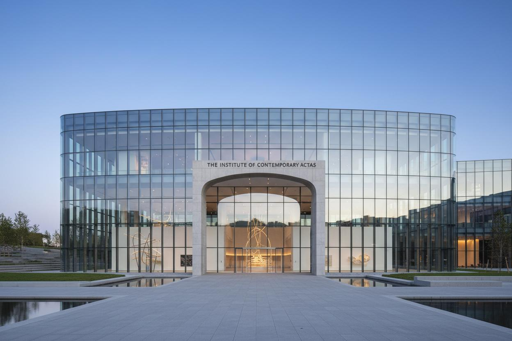
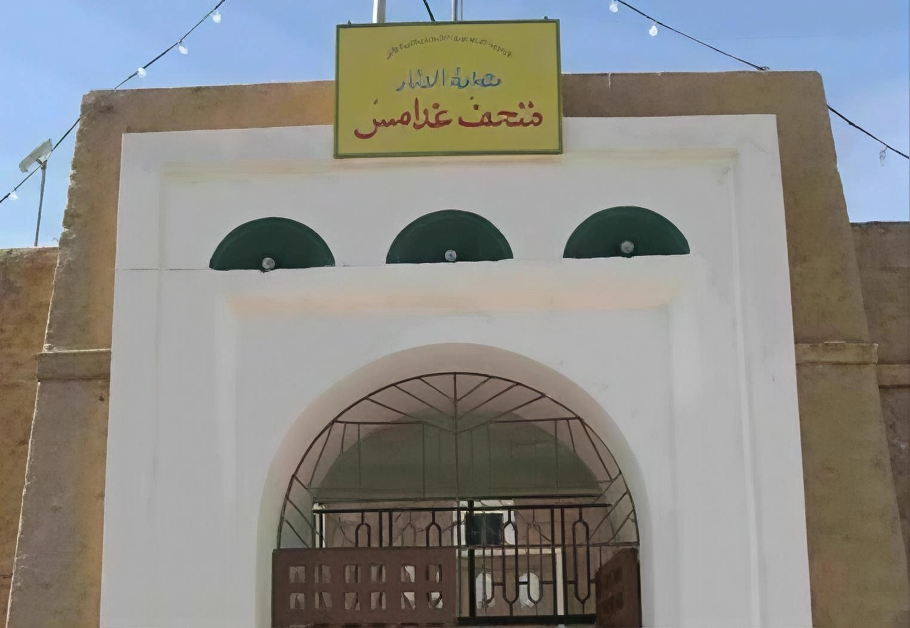

المتاحف الليبية
تعرف على المتاحف التي تحكي تاريخ وحضارة ليبيا
تعرف على المتاحف التي تحكي تاريخ وحضارة ليبيا
أهم متحف في ليبيا يقع داخل القلعة الحمراء في طرابلس. يضم مجموعات أثرية من العصور الحجرية حتى العهد الإسلامي، بما في ذلك تماثيل رومانية وعملات وخزف.

المتحف الوطني الرئيسي في ليبيا يضم مجموعة نادرة من الآثار الرومانية واليونانية والإسلامية التي تم اكتشافها في مختلف أنحاء البلاد.

يقع في مبنى تاريخي في قلب بنغازي. يضم مقتنيات أثرية من الشرق الليبي تشمل قطعاً من قورينا وطلميثة والمواقع الأثرية المحلية.

يقع داخل الموقع الأثري ويضم مجموعة من الفسيفساء الرومانية والتماثيل والقطع الأثرية التي عُثر عليها في الحفريات.

يحكي تاريخ واحة غدامس وتراثها الثقافي. يضم أدوات تقليدية وملابس ومقتنيات تعكس الحياة الصحراوية التقليدية.

يضم مقتنيات أثرية من منطقة الجبل الأخضر تشمل قطعاً من قورينا والمواقع الأثرية القريبة. يقدم نظرة على تاريخ المنطقة.